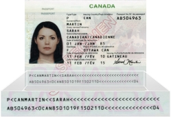
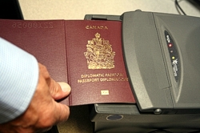

About ePassports
Starting on July 1, 2013, all new Canadian passports issued will be electronic passports, or ePassports. At that time, adult applicants will have the option of a 5- or 10-year ePassport for both first-time applications and renewals, while children's ePassports will be issued for a maximum of 5 years.
Enhanced security
The Canadian ePassport will have an electronic chip embedded in the back cover of the book. The chip adds an extra layer of security to the passport and makes it more tamper-proof.
The chip in the ePassport stores the same personal information that you see on page 2 of the passport (except for the holder’s signature), the photo and a country-specific digital security feature (or "signature") that proves the passport was issued by the Government of Canada.
Protecting your information
Machine-readable zone
Machine-readable zone
When information is first stored on the chip in the Canadian passport, the chip is electronically locked. This means that even if someone were to attempt to tamper with the data on the chip, the chip would indicate that the lock had been broken and the fraud would be detected.
The chip is a proximity contactless chip that must be held within 10 centimetres of an ePassport reader to be read. In addition, the data on the chip cannot be accessed until the machine-readable zone on page 2 has first been read, which means that the passport book must be open to be read.
It is therefore extremely unlikely that personal data stored on the ePassport chip could be read without your knowledge.
Reader
An ePassport being read by a reader
At border crossings equipped with ePassport readers, the ePassport is put into a scanner that reads the machine-readable zone, which in turn allows the chip to be read as well. The machine also checks other security features, such as the country-specific signature. Border authorities not equipped with ePassport readers will continue to examine travellers’ passports as they do now, looking at other security features such as holographic images.
Tried and true
Some 95 countries, including the United States, the United Kingdom and France, have been using ePassports for several years with no reported chip failures. Through a pilot project that began in January 2009, Passport Canada has already issued more than 50,000 diplomatic and special passports that contain an electronic chip, and no problems have been reported.
In the unlikely event that the chip cannot be read, the passport will still be valid.
A transparent process
No additional information about you or your travels will be stored on the chip. The chip will only contain the personal information you can see on page 2, your photo, and a Government of Canada signature. ePassport readers will be installed in Passport Canada’s 34 offices for people who would like to see the information stored on their chip to make sure it is accurate.
- Date modified: